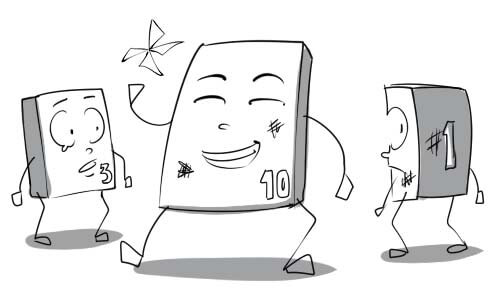
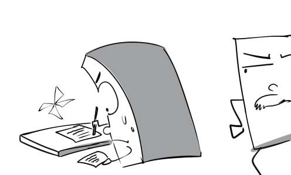
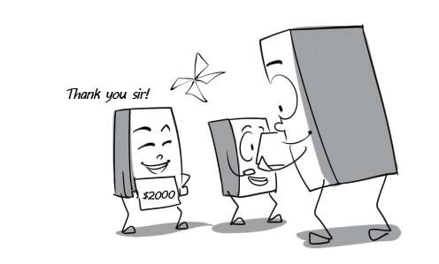
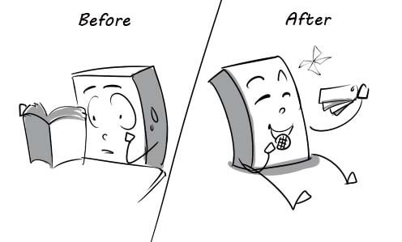
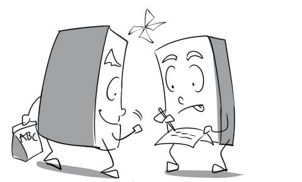

1.
activity: My brother engages in a variety of sports activities.

2.
aspect: The greatest aspect of this aspirin is that it doesn't make you sleep.
3.
creativity: The actor's creativity in representing his character makes everybody very surprised.

4.
daily routine: Teeth brushing is a part of our daily routine.

5.
desire: The director desires that his company's turnover would increase by 70% in the next 6 months.
6.
disappointment: Peter expressed his disappointment when his date didn't show up.

7.
experience: Live concert is an enjoyable experience for me.

8.
fulfillment: Winning this championship is the fulfillment of his longtime ambition.

9.
goal: His short-term career goal is to find a high-paid job.
10.
hobby: Playing football is my biggest hobby.
11.
insight: The customer insight shows that they have many questions about English. We build website EEZY to answer them all.

12.
leisure: People with too much leisure always find their lives so boring.

13.
lifestyle: David has a very unhealthy lifestyle. He does nothing but drink all day.

14.
optimist: He is still happy when his team loses the game. What an optimist he is!

15.
outlook: The oriental and the occidental have different outlooks on marriage.
16.
opportunity: You will have an opportunity to win a car when you buy our product.

17.
personality: This girl is very beautiful but she has a very bad personality.
18.
pessimist: The pessimist thinks he will fail the exam although he did a good job.
19.
priority: For many recruiters, their top priority is to find someone who is fluent in English.

20.
pressure: The pressure of work makes me crazy.

21.
realist: Being a realist, Daisy would rather marry an ugly but rich man than a handsome but poor one.

22.
risk-taker: The risk-taker is performing a dangerous stunt with his car.

23.
self-expression: Andrew draws self-portraits for his own enjoyment and self-expression.

24.
sense: Mary can smell a different perfume on her husband thanks to her keen sense of smell.

25.
active: My grandfather is still very active although he is 70 years old.

26.
dreamy: My brother is dreamy. He always comes up with weird things.

27.
well-educated: My company just recruits well-educated employees.

28.
painstaking: Peter is a painstaking man. He always prepares his luggage carefully before every trip.

29.
confused: I am quite confused right now and don't know which way to go yet.
30.
attract: Many guys are attracted by Katy's charming appearance.

31.
moderate: Remember to moderate your appetite if you want to lose some weight.

32.
motivate: Peter is motivated entirely by the big sum of money they will pay him.

33.
regret: The little boy regretted having lied to his mother about his results.

34.
relax: I usually go to a spa to relax every Sunday.

35.
satisfy: Peter buys many presents for his girlfriend to satisfy her.

36.
assignment: I have to stay up all night to finish my assignment because the deadline is tomorrow.

37.
boredom: Although I nearly died of boredom, I kept listening to his cheesy stories.
38.
certificate: The principal is handing graduate certificates to the students.

39.
college: My brother decided to study at the college of tourism.
40.
controversy: There was a big controversy among students over the bizarre artwork.
41.
curriculum: This year's curriculum consists of many challenging subjects such as algebra, geometry…

42.
dissertation: The student is upholding his dissertation in front of the professors.

43.
education: In Vietnam, everybody has to finish general education in order to get a good job.

44.
exam: My friend cheats on the history exam because he didn't study anything at all.

45.
field: The professor cannot answer this question because it is outside his field.

46.
finding: The survey's finding gave us some insight into consumer needs.

47.
funding: My team received funding for our scientific research.

48.
grade: My son's grades have been improved remarkably in such a short time.
49.
grant: We decided to award a grant to poor students who got good grades.

50.
high school: Le Hong Phong is one of the best high schools in Ho Chi Minh city.

51.
homework: My son tried to do his homework on his own although it was quite difficult.
52.
kindergarten: In kindergartens, children can learn to communicate, play and interact with others
53.
learning disorder: It's hard for Tommy to understand the lesson because he has a learning disorder.

54.
lecturer: This lecturer has been teaching at my university for almost 20 years.

55.
library: I went to the library to borrow some books.

56.
prodigy: My son is a child prodigy in mathematics.

57.
Master: My brother is a Master of Business Administration.
58.
nursery: Mary sent her child to a nursery because she had to return to work.

59.
PhD: I want to become a PhD in mathematics before I turn 30.
60.
primary school: In Vietnam, children normally start going to primary school at the age of six.

61.
project: I am doing a school project on how to save energy.

62.
research: I am conducting some research on the daily routine of birds.
63.
resources: His parents used all their financial resources to send him to Harvard.
64.
result: The student was really shocked when he saw his exam results.

65.
scholarship: The poor student won a full scholarship to study at Harvard.

66.
scope: Everybody is surprised at his wide scope of mathematical knowledge.

67.
secondary school: In secondary schools, students are prepared for the entrance exam to universities.

68.
source: You should acknowledge your sources at the end of your essay.

69.
syllabus: According to the syllabus, I have to read many difficult books.

70.
tuition: I went to the office of academic affairs to submit my tuition.

71.
theory: The students got bored because the teacher just taught theories without giving illustrations.
72.
tutor: My strict tutor always gives me a lot of exercises to do.

73.
university: After finishing college, Tuan applied for an undergraduate course in the university.
74.
compulsory: In developed countries, schooling is compulsory for all children from the age of 5 to 16.

75.
academic: In my country, the academic year begins in September and ends in May.

76.
eligible: In Vietnam, you are eligible to vote when you are 18 years old.
77.
mixed: My children are studying at a mixed school.

78.
postgraduate: After graduating from the university, Peter applies for a postgraduate course.

79.
relevant: The interviewer asks me if I have the relevant experience.
80.
senior: In my school, senior students are respected by younger ones.

81.
single-sex: My parents sent me to a single-sex school because they didn’t want me to play with boys.
82.
studious: The studious student always comes to the library to study on the weekend.
83.
work-related: My company will pay all the work-related expenses.
84.
adopt: The student adopted a new learning method in order to learn more effectively.

85.
analyse: The studentis analysing water samples in the laboratory.
86.
conduct: My company is conducting a survey on the customers.

87.
concentrate: David is concentrating on the assignment so don't bother him.

88.
consider: Tuan is considering selling his laptop because he is out of money.
89.
find out: Daisy found out about the money that her husband hid under the bed.

90.
graduate: Kate graduated with first-class honours from medical school last year.

91.
neglect: David neglects his studies and just concentrates on how to make money.
92.
organise: The graduation ceremony will be organised at the hall tomorrow.
93.
review: Phong reviews his paper one more time before submitting it.

94.
revise: The teacher asked me to revise my essay because it had too many mistakes.
95.
struggle: Peter is struggling to finish the test because it is too difficult.

96.
relatively: The train was relatively empty although it was the tourist season.